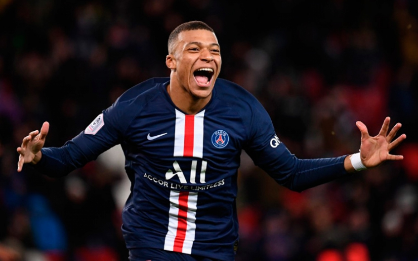

Paris Saint-Germain Football Club
O Paris Saint-Germain Football Club, também conhecido como Paris Saint-Germain ou pela sua sigla "PSG", é um clube de futebol profissional da França, com sede em Paris. As suas cores são as cores tradicionais da cidade de Paris, o azul e o vermelho, e de Saint-Germain, distrito nos arredores de Paris, branco. O clube teve origem em 1970, a partir da fusão entre Paris Football Club, criado um ano antes, e do Stade Saint-Germain, fundado em 1904.
Principais Jogadores
Neymar
Neymar da Silva Santos Júnior, mais conhecido como Neymar Jr. ou apenas Neymar (Mogi das Cruzes, 5 de fevereiro de 1992),[11][12] é um futebolista brasileiro que atua como atacante. Atualmente joga pelo Paris Saint-Germain e pela Seleção Brasileira..
Kylian Mbappé

Kylian Mbappé Lottin, mais conhecido como Kylian Mbappé ou somente Mbappé (Bondy, 20 de dezembro de 1998), é um futebolista francês que atua como ponta. Atualmente joga no Paris Saint-Germain..
Edinson Roberto Cavani Gómez (Salto, 14 de fevereiro de 1987) é um futebolista uruguaio que atua como atacante. Atualmente defende o Paris Saint-Germain.
O Trio do psg.
Um trio que custou 465 milhões de euros.
O jogador mais caro da história do futebol.
O segundo jogador mais caro da história do futebol.
Um dos maiores artilheiros da Europa.
O PSG investiu muito para elevar o seu patamar e para se consolidar na Europa.
Números da temporada 16/17:
Neymar Jr. - 20 gols e 27 assistências
Edi Cavani - 49 gols e 6 assistências
Kylian Mbappé - 26 gols e 14 assistências
Jogadores que "juntos" marcaram 95 gols e deram 47 assistências.
 Títulos
Títulos

9X CAMPEÃO DE FRANÇA.
12X VENCEDOR DA TAÇA DE FRANÇA (COUPE DE FRANCE)
8X VENCEDOR DA TAÇA DA LIGA DE FRANÇA
1X VENCEDOR DA TAÇA DAS TAÇA
9X VENCEDOR DA SUPER TAÇA DE FRANÇA